Konto & hudprofil
Säker registrering med e-postverifiering. Din grundprofil styr vilka frågor du får och hur AI:n tolkar dina bilder.
Beskriv din hud, svara på några frågor och ladda upp en bild. Dermoras AI tolkar helheten och föreslår en personlig plan som du själv granskar och bekräftar.
Vi intervjuade tio personer med återkommande hudproblem. Nästan alla hade provat flera produkter på råd från TikTok, apotek eller vänner – utan att veta vad som fungerade för just dem.
”Det fanns för många olika råd och jag visste inte vad som passade mig.”
”Alla rekommenderar olika saker och det är svårt att veta vad huden behöver.”
”Jag spenderade mycket pengar innan jag fick en tydlig plan.”
Källa: teamets användarintervjuer och Javelin-experiment, hösten 2026. Små urval – inte statistiskt säkerställda.
Skapa konto, verifiera e-post och svara på smarta frågor om hudtyp, besvär och rutiner. Följdfrågorna anpassas efter dina svar.
Kameraguiden hjälper dig att hitta rätt ljus och avstånd. Bilden lagras privat och krypterat – bara du kan se den.
Bild och svar skickas till vår backend som bygger kontext och låter en multimodal AI-modell ge strukturerad vägledning.
Ställ följdfrågor i chatten. När planen känns rätt bekräftar du den – och den sparas så att du kan följa den över tid.
Skärmarna nedan är tagna direkt från appen. Svep för att följa flödet.
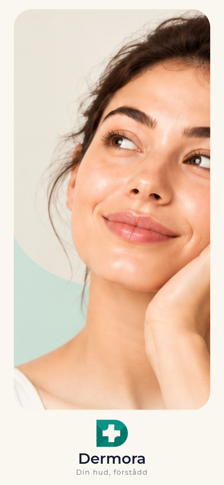
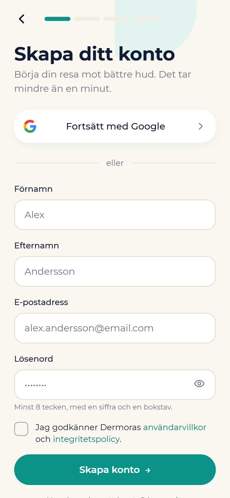
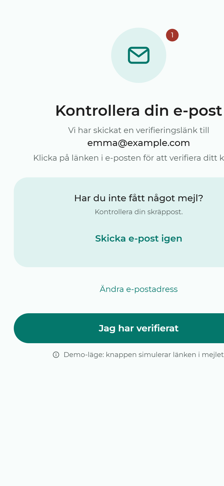
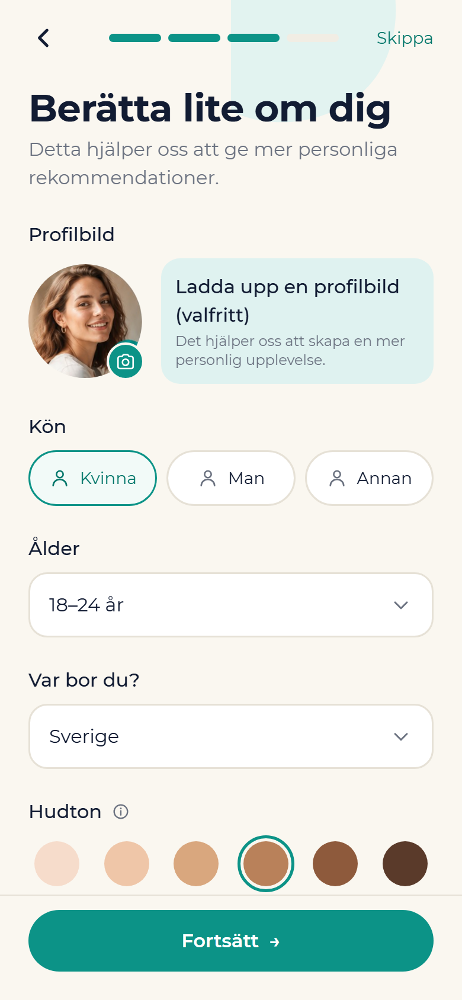
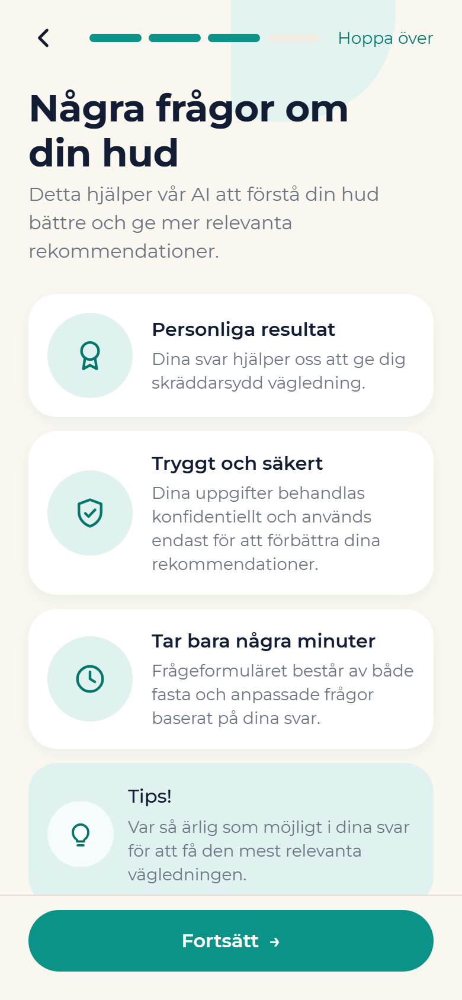
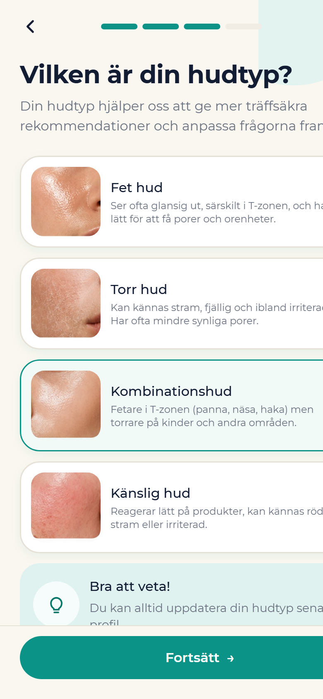
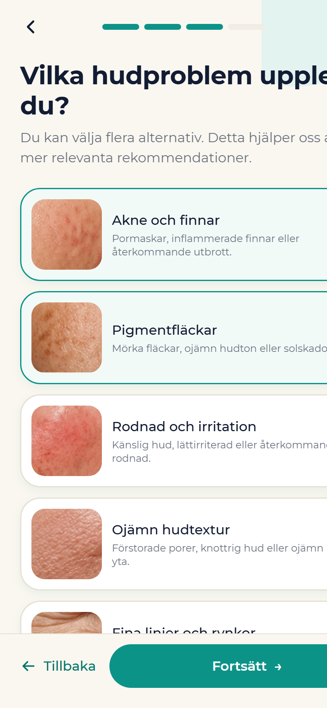
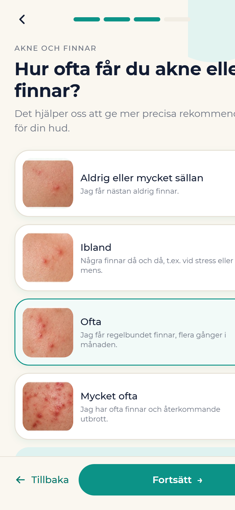
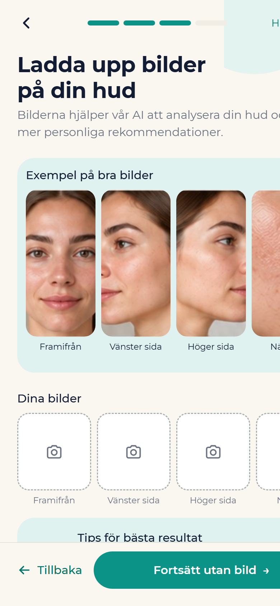
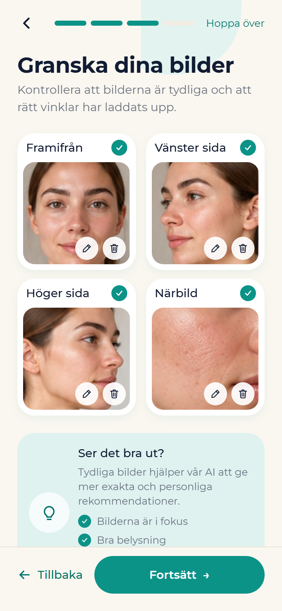
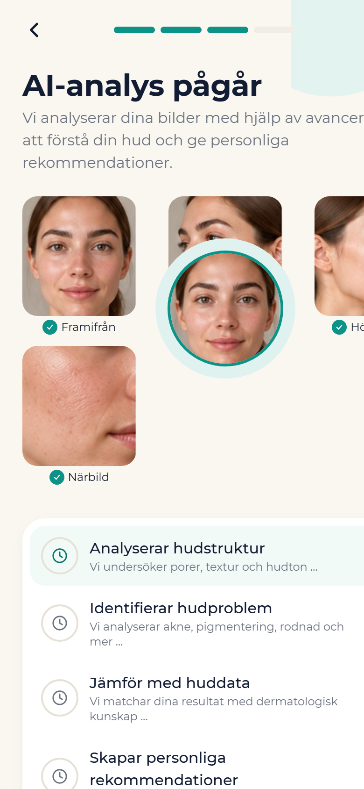
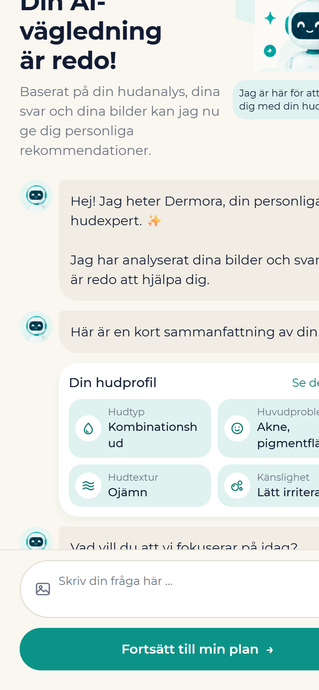
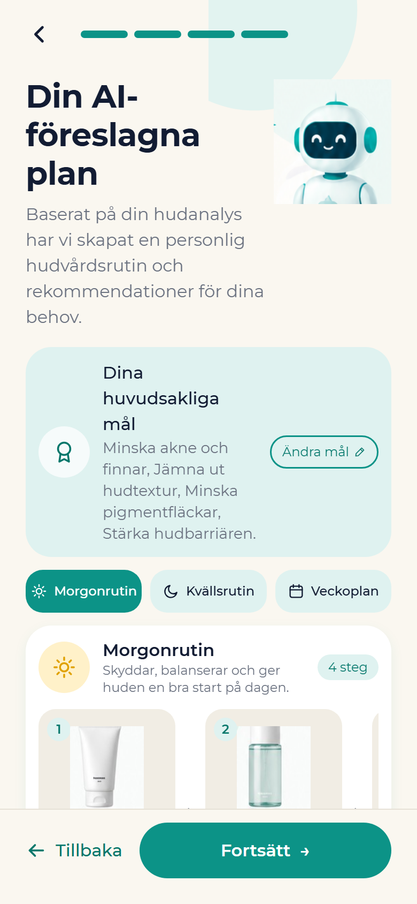
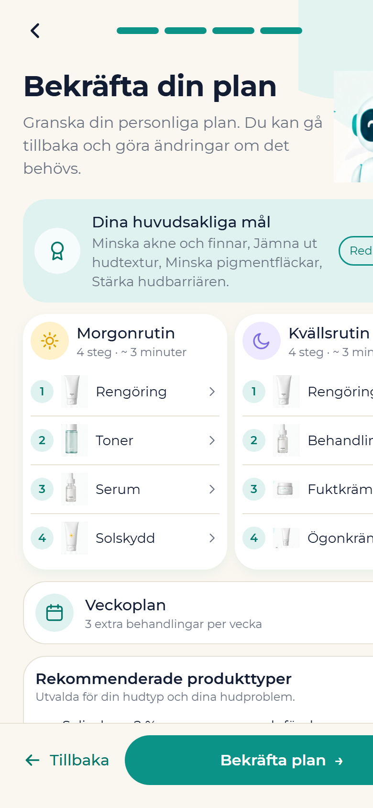
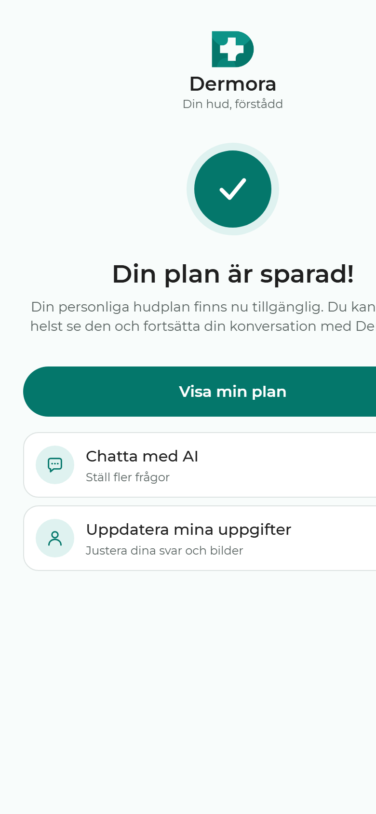
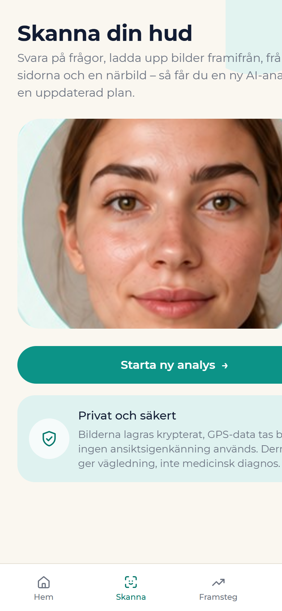
Samma app som på mobilen – körs direkt här, inget att installera.
Säker registrering med e-postverifiering. Din grundprofil styr vilka frågor du får och hur AI:n tolkar dina bilder.
Villkorade följdfrågor: svarar du ”akne” får du frågor om var, hur ofta och vad du redan provat.
Ansiktsdetektering kontrollerar att bilden är skarp, rätt vänd och tillräckligt ljus innan AI:n analyserar huden.
AI:n känner till dina svar och din bild. Fråga varför den föreslår en viss rutin, eller vad du bör undvika.
Strukturerad plan med morgon- och kvällsrutin, vad du ska vänta dig och när du bör följa upp. Du bekräftar innan den sparas.
Bilder och svar lagras i en privat bucket med radnivåsäkerhet. Du kan exportera eller radera allt när du vill.
Dermora identifierar aldrig vem du är. Ansiktsdetektering används bara för att hjälpa dig ta en bra bild. Analysen handlar om huden, inte om identitet.
Appen pratar bara med vår backend – aldrig direkt med databasen eller AI-tjänsten.
Vi delar inte projektet i sex orelaterade bitar. Vi delar en användarresa i sex tydliga ansvarsområden – alla granskar varandras kod och varje sprint slutar med en fungerande version.
Product Owner
AI-vägledning & AI-integration. Kopplar frågeformulär och bilder till personlig vägledning.
Scrum Master
Behandlingsplan & delat UI. Gör AI-resultatet användbart: granska, bekräfta, spara och visa planen.
Utvecklare
Autentisering & profil. Hela ingången: registrering, inloggning, verifiering och grundprofil.
Utvecklare
Frågeformulär. Frågor, svar och villkorade följdfrågor som styr AI:ns kontext.
Utvecklare
Bilduppladdning & lagring. Kamera, galleri, förhandsvisning, ansiktsguide och privat uppladdning.
Utvecklare
Backend & databas. API:er, datamodell och säkerhet som alla andra funktioner bygger på.
Modulär struktur där varje feature lever i sin egen mapp. Nya moduler som progress tracking, notiser och läkarkontakt kan läggas till utan att bygga om grunden.
Källkod, databasschema, API-kontrakt och arkitekturbeslut finns dokumenterade i projektets GitHub-repo.
Nej. Dermora ger personlig vägledning kring hudvård baserat på dina svar och bilder. Det är inte en diagnos och ersätter inte vård. Vid oro, smärta, snabb förändring eller tecken på infektion ska du kontakta vården.
Bilderna laddas upp krypterat till en privat lagring som bara ditt konto har åtkomst till. De används för att ge dig vägledning och för att du ska kunna jämföra utveckling över tid. Du kan radera dem när som helst.
Nej. Vi använder ansiktsdetektering – som bara hittar att det finns ett ansikte i bild och hjälper dig med inramning. Vi skapar inga biometriska mallar och kan inte identifiera personer.
En multimodal modell som kan tolka både text och bild (Google Gemini). Vi tränar ingen egen bildmodell i MVP:n. Teamets AI-arbete handlar om prompter, strukturerad output, kontext, testfall och säkerhetsregler.
Release 1 är under utveckling. Anmäl dig till betan nedan så hör vi av oss när testversionen är klar via Expo.
Lämna din e-post så får du en inbjudan när betan öppnar. Vi skickar inget annat.
Formuläret är en prototyp. Ingen data skickas förrän backend är kopplad.